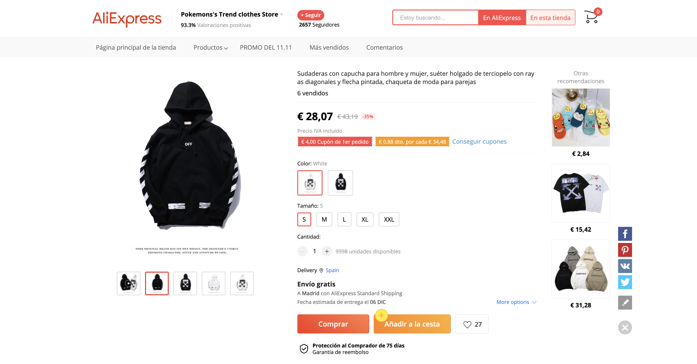
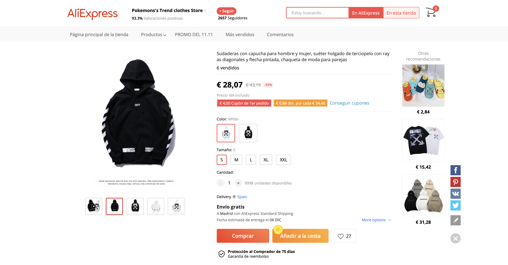

Funcionalitat
AliExpress és una empresa dedicada al comerç electrònic fundada en 2010 a partir de petites empreses de la Xina i d'altres països que ofereix productes per a compradors internacionals. És propietat d'Alibaba Group.
 

Companyia
Alibaba Group és un consorci privat xinès que posseeix 18 subsidiàries amb seu a Hangzhou dedicat al comerç electrònic a Internet, incloent-hi portals de vendes business-to-business, de venda al detall, i de venda entre consumidors; també ofereix serveis de pagament en línia, un motor de cerca de comparació de preus i serveis d'emmagatzematge de dades al núvol. El 2012, dos dels portals d'Alibaba junts van manejar 1,1 bilions de iuans (170.000 milions de dòlars) en vendes, més que els seus competidors eBay i Amazon.com combinats.
Com funciona?
AliExpress funciona bàsicament com a Mercat Lliure, és a dir, compta amb proveïdors que venen diversos productes i quan un usuari fa la recerca d'un producte determinat obté els resultats d'aquest producte dels venedors més fiables i amb millors ressenyes. Abans de comprar un producte a AliExpress, com a qualsevol botiga en línia, t'has de fixar en la descripció dels productes, la valoració atorgada pels compradors i les ressenyes dels clients. AliExpress envia gairebé a qualsevol país del món per mitjà d'AliExpress Standard Shipping el qual és l'enviament internacional que arriba per Correus de Mèxic i molts dels seus productes no tenen cost d'enviament, fins i tot si demanes una peça. Pel que fa als pagaments, permet pagaments amb gairebé qualsevol targeta, dipòsits, PayPal, entre d'altres.
Avantatges
Al contrari que amb Unidays es comode comprar en Aliexpress, perqué fas la compra de productes a la mateixa web sense necessitat de anar-hi a una segona web. Un altre avantantgees la gran variació de productes que ofereixen.
Inconvenients
Hi ha dos inconvenients molt grans que perjudiquen a aquesta web: la mala qualitat de la majoria del seus productes ja que venen de la xina i el temps que triga en arribar la comanda.